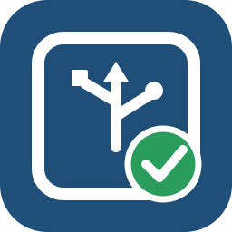

SPIKE-RT
Web Toolkit
ビルド済みアプリの書き込みとUSBシリアルデバッグをブラウザから行います。
FIRMWARE
プログラム
catalog.jsonを確認しています
—
—
ファームウェア詳細
WEBUSB DFU
Hubへ書き込み
- WebUSB
- 確認中
- Hub
- 未接続
- 転送
- —
DFUモードの入り方
- Hubの電源を切りUSBケーブルを抜きます。
- Bluetoothボタンを押したままUSBを接続します。
- 赤・緑・青に繰り返し点滅したらボタンを離します。
- 「Hubに接続」からDFU ModeのHubを選択します。
Windows: Hubを選択できない場合は Windows 初回設定 を開いてください。
待機中
書き込みログ
準備完了
書き込み方式と安全制限
アプリ領域0x08008000以外と992 KiB超のファイルは拒否します。セクタ消去、分割書き込み、DFU状態確認後、SPIKE-RT v0.2.0公式と同じ0x08000000を指定してDFUを終了します。
WEB SERIAL
USBシリアルデバッグ
SPIKE-RTが通常起動しているHubのCOMポートを選びます。
- Web Serial
- 確認中
- USBシリアル
- 未接続
- 速度
- 115200 bps
デバッグ接続待ち
接続で迷ったとき
Chrome / Edgeのシリアルポート選択画面からSPIKE-RTのCOMポートを選びます。必要ならWindowsのデバイスマネージャー「ポート (COMとLPT)」でCOM番号を確認してください。DFUモードではなく通常起動したHubを使います。

WINDOWS / WEBUSB
Windows 初回設定
WebUSBでDFU Hubを選択できないPCでは、専用ツールでDFUモードのHubだけをWinUSBへ設定します。
- 1EXEをダウンロード
Windows x64用の単一EXEです。
- 2HubをDFUモードで接続
Bluetoothボタンを押しながらUSBを接続します。
- 3EXEを起動
対象Hubを自動確認し、必要な場合だけWinUSB設定を案内します。
- 4「準備完了」を確認
ツールを閉じて「書き込み」へ戻ります。
対象はDFU用USB 0694:0008だけです。SPIKE-RT実行中のUSBシリアル / COMポートには触れません。設定済みPCでは何も変更せず終了します。
v0.3.0 pre-release / 新規WinUSB割り当て経路のみ未設定PCでの最終実機確認待ち